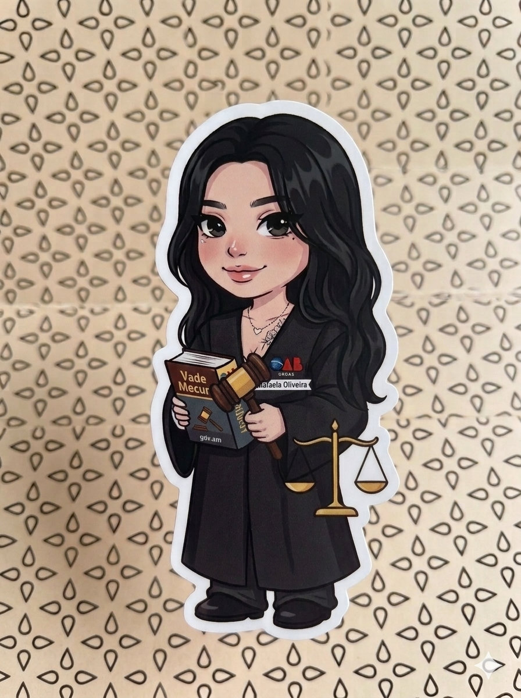

Enfim, sem mais clichês meu amor.
Primeiro quero dizer que TE AMO muito. Por mais que você não curta tanto o seu dia, eu espero de coração que você mude de ideia e aproveite, porque hoje é o dia em que você nasceu! O dia em que Deus trouxe alegria para a sua família e claro para mim. O dia em que a mulher que amarei eternamente nasceu não é um dia qualquer. Desde que vi você sentadinha no PC, eu sabia que toda aquela fachada de homem durão e sombrio sumiria, porque um simples olhar me fez enxergar o amor que tinha morrido, ou que eu tinha tentado matar. Deus me apresentou a felicidade de te amar, a felicidade de ser amado pela mulher mais incrível, linda, fofa, gentil, carinhosa, inteligente, esforçada e carismática. São infinitos adjetivos para quem carrega o peso de um mundo caótico nas costas.
Eu te amo, Rafa. Feliz aniversário!
Do meu deitar ao acordar, a primeira pessoa que vem à minha mente é você. Quando te vejo, meu sorriso sai automático e meus olhos brilham tanto que até a escuridão do universo se acende, fazendo o apelido carinhoso de Vênus se tornar pequeno. Se Deus precisou de 6 dias para criar o mundo, como um mortal igual a mim conseguiria descrever o meu mundo (que é você) em palavras? Não tem como. Afinal, para mim você é o mundo! Você é a felicidade de um "boa noite", "bom dia", "vai com Deus", "se cuida", "me avisa quando chegar", "eu te amo". É a lembrança em uma música que toca, a vontade de te dar uma flor que vejo na rua, o mini bode que ainda vou te dar, a estante de livros que vou te montar, a estufa que vou te dar... Entende como é difícil descrever o meu mundo?
O dia a dia caótico que me traz conforto ao seu lado.
Eu sei como sua vida pesa, como tudo parece estar contra você e como é difícil. Pessoas falam, fazem e te magoam. Eu vejo tudo isso e sei como dói, mas eu sempre te digo: me mostre onde dói que te amarei tanto a ponto de você esquecer da dor. Me dê o seu mundo, que eu vou carregá-lo pelo tempo que for necessário. Sentar ao seu lado, te ouvir e te abraçar me traz o mesmo conforto que sinto ao ter o seu amor. Se para toda ação existe uma reação, eu quero ser a sua calmaria, o seu porto seguro, o seu "Hoje foi difícil, mas o Kewyn tá me esperando, vai ficar tudo bem". Se o amor é a tecla que Deus sempre clica, eu te digo: o nosso amor supera tudo. Se até mesmo o espaço é superado pelo amor, o que seria do dia a dia caótico contra nós?
O que seria do Luan sem o seu Santana?? 😂
Títulos engraçados kkkk. O que seria do Kewyn sem a Rafa?? O que seria do meu sofá sem os seus presentes?? Parando com as gracinhas, eu quero do fundo do meu coração que você curta o dia de hoje. Que no dia do nosso casamento, na nossa primeira noite em casa, na nossa primeira refeição e na nossa primeira viagem, você possa olhar para o lado e ver que tudo o que prometi era verdade. Que quando você estiver no seu primeiro júri, no seu primeiro dia como Juíza, possa ver que tudo deu certo, olhar para a sua aliança e para o seu anel de formatura e se sentir realizada e feliz por não estar sozinha.
Talvez "Somos Apenas Um" seja a nossa música!!
Se me dissessem no passado, enquanto eu ouvia "Meteora da Paixão" escondido, que aos 26 anos eu teria uma playlist do Luan Santana, eu nunca acreditaria! Mas quando você ama, você aprende a gostar e entende tudo o que o seu amor gosta. Você se esforça para ser melhor, e a gente melhora dia após dia. Isso fala muito sobre nós, porque no fim do dia somos apenas um, procurando melhorar, amar, cuidar e ser presente nos pequenos detalhes, gestos, palavras e olhares. E isso é o amor.
O medo de não estar bom... o fim??
Nunca fui super perfeccionista, mas sempre gostei de dar o meu melhor em tudo o que me disponho a fazer. Não importa quantos dias eu passe fazendo esse site ou quanto tempo eu leve para escrever, no fim sempre vou achar pouco. Não por orgulho ou vaidade, mas porque você merece o melhor que eu posso oferecer. Por mais que eu esteja em uma busca constante para melhorar, ainda temo não ser o suficiente. Mas não quero pesar o clima hoje! Quero apenas te dizer tudo o que você representa para mim.
Não era o fimmmmmmmm!
Rafa, Vênus, GJ504b (o planeta rosa), vida, amor... são muitos os nomes que representam você, mas o que eu mais gosto é Vênus. Ele é único. Representa não apenas a sua beleza, mas o fato de você estar orbitando o Sol que sou eu, me lembrando de ser melhor a cada dia. Sempre gostei de romances e imaginava como seria amar, mas não tinha ideia de que era tão bom assim. Deus realmente sabe o que faz. Mesmo sendo difícil hoje, sinto que o Sol iluminará Vênus de uma forma nunca vista e o nosso amor será eterno. O mundo será movido, o universo será mudado, tudo será feito para que o nosso amor dure para sempre! Você representa o lado meu que eu tentava sufocar, e hoje vejo a burrice que era tentar matar o meu lado mais belo. Obrigado por me fazer viver o amor e a felicidade de ter você na minha vida. Te amo!
Tá, e agora... é o fim??
Sim! Mas não sem antes dizer que você é a mulher mais incrível deste mundo. Admiro demais a forma como você vive, como organiza a sua vida, o jeito perfeito com que faz as coisas, a sua caridade, gentileza e feminilidade. Tudo isso e mais infinitos adjetivos me fazem o homem mais sortudo e feliz do mundo. Se "Noites Brancas" me mostrou que a solidão dói, e "Fleabag" mostrou que o perdão próprio ajuda a superar o luto e a solidão, você me mostra que o amor é lindo de ser vivido. Acordar e ter o seu "bom dia" traz paz para o meu dia inteiro. Você me mostra que uma mulher forte não precisa de ninguém, mas mesmo assim escolheu me amar. Ver uma linhagem de mulheres fortes me fez admirar e amar a mulher que você se tornou. Tenho um orgulho tão grande de ti, uma admiração e um amor que me fazem perguntar "como?", mas não existe o "como", apenas o "por que demorou tanto?!". Mas tudo acontece no tempo certo. Vida, te amo! Aproveite o seu dia, espero que esta carta possa te tocar e deixar o seu dia melhor. O que seria do Kewyn sem a Rafa? O mundo continuaria escuro, o Sol não teria o brilho que tem hoje e o universo continuaria monótono e sem graça... Bastou apenas um "bom dia" seu para que tudo mudasse. Parabéns, meu amor. Te amo!
